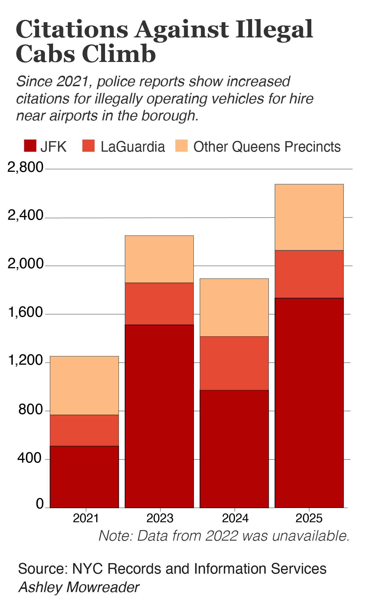
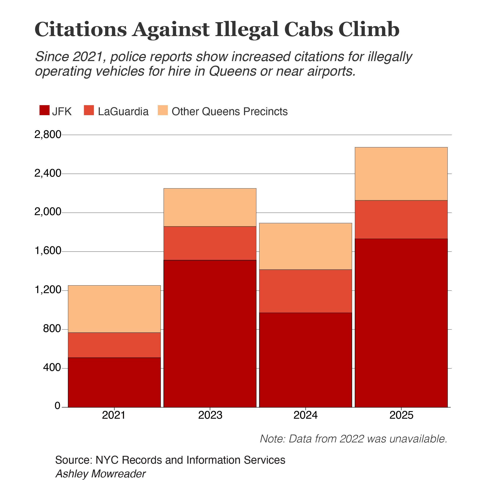
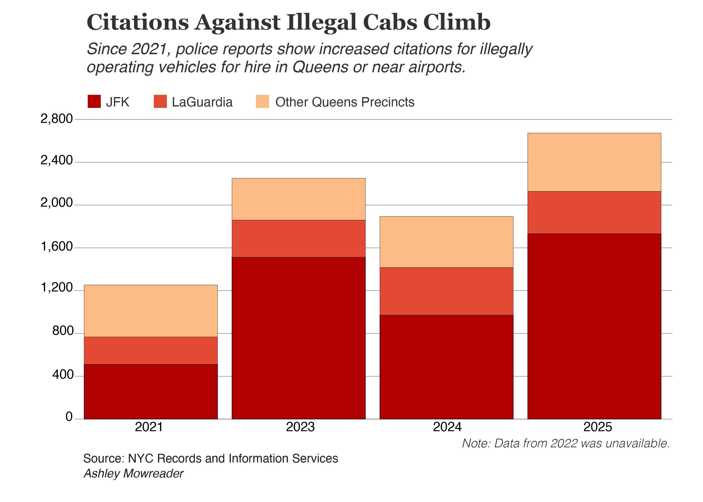

Photo by Thomas/Pexels
Taxi Cab Fraud Thrives at Airports
Data shows Queens precincts are more likely to record citations for illegal van-for-hire operation, particularly near LGA and JFK.
In 2025, John F. Kennedy International and LaGuardia Airports welcomed 142.7 million passengers between the two airports, the second-busiest years ever, per Port Authority data.
As commercial aviation business surged in Queens, so did taxi cab fraud.
In New York City, only certain vehicles can operate as taxi cabs or other vehicles for hire, as licensed by the Taxi and Limousine Commission (TLC).
Victims of taxi cab scams have paid as much as $800 for a ride between JFK and Times Square, according to Gothamist reporting.
An analysis of police data reported by the TLC found over 2,000 drivers received citations for operating non-TLC licensed vehicles at JFK and LGA, with over 1,732 citations filed at JFK alone.
Among all citations given to non-TLC licensed vehicle drivers in 2025, over half (55 percent) were logged at JFK or LGA versus other police precincts.
The number of citations given out at airports has also grown over the past several years, rising 176 percent from 768 in 2021.



City data dated back to 2019, however, some quarters were missing from the database, making it impossible to analyze trends in 2019, 2020 and 2022.
In September, New York City Council members introduced legislation to impose stricter fines and penalties on unlicensed van-for-hire operations, hoping to reduce the number of drivers unregistered with the TLC.